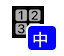
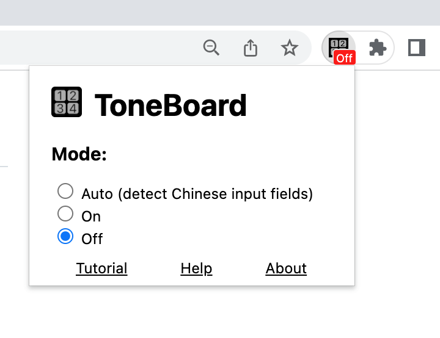

Welcome to ToneBoard!
ToneBoard is an input method that requires you to enter the correct tones while typing simplified Chinese with Pinyin.Tutorial
Test out the ToneBoard Chrome extension in the input boxes just below.The Basics
Input Chinese characters by typing a syllable in Pinyin followed by a tone number. Try entering 好 (hǎo, good) by typing "hao3". You can select the first option with the space key.
Words
Now try inputting a compound word. Try entering "可爱" (kěài, cute) by typing "ke3ai4". Notice that the syllables "ke3 ai4" are displayed with a space between them for easier reading.
Sentences
ToneBoard does not try to make complete sentences for you, so you will need to input them one word at a time. Try inputting "我喝水" (wǒ hē shuǐ, or "I drink water"). You can add a Chinese full-stop ("。") using the normal full-stop/period (".") key.
Selecting Characters
You can cycle through options of characters to input using the Tab or left-arrow keys. (You can go back to previous options using Shift-Tab or right-arrow keys.) Try typing "li3" and choosing "李" (a common Chinese family name).
The Return Key
The "return" (or "enter") key can be used to directly enter any typed text, ignoring any Chinese character options present. Try inputting "hello" by typing "hello" and then hitting return.
Modes
The ToneBoard Chrome extension has several "modes" of operation:
- Auto (detect Chinese input fields): This is the default mode. (All the input fields so far in the tutorial have been indicated as Chinese-language.) It is very useful on language learning websites that frequently switch between e.g. English and Chinese input fields. It is indicated in the Chrome Extension icon with a "中" character: 
- On: Enable ToneBoard on any input field, indicated as "On":
- Off: Disable ToneBoard on all input fields, indicated as "Off":
You can change the mode by clicking on the ToneBoard icon and selecting an option in the popup menu:
Try using the following input fields to test the Auto/On/Off modes:
Help
Why isn't the ToneBoard input popup showing up?
If ToneBoard is in the "On" mode (see modes) and you type a valid pinyin syllable like "hao" and the ToneBoard interface does not appear, this could be because:
- It is an unsupported HTML element: The ToneBoard Chrome extension currently works with standard HTML "input" and "textarea" elements. Other mechanisms used by editors like Google Docs are not currently supported.
- The website is using the input field in an unsupported way: Many websites use JavaScript to interact with HTML input elements in the same way that ToneBoard does. It is possible that some websites' code will conflict with ToneBoard.
If the ToneBoard interface appears in "On" mode but not in "Auto" mode, this is because ToneBoard is unable to detect that the field is meant for Chinese language (technically, the "lang" attribute is not set to "zh" on the HTML "input" or "textarea" element). Use "On" mode to force ToneBoard to appear.
Why isn't some character or word showing up?
ToneBoard presents character and word choices based on data from the CC-CEDICT project. You can explore the data there to see what words and readings are available. You can also contribute new words to the project so that they can be included in a future version of ToneBoard. Note that ToneBoard does remove a few entries from the CC-CEDICT data. Specifically, it only includes words that are four or fewer characters, consisting only of 汉字 (hànzì, Chinese characters), and including a Pinyin reading in the normal format.
I still need help.
If you don't find an answer to your question above, you can open an issue in the public issue list or contact toneboard@bellkev.com.
About
Motivation
It can be very difficult for language learners to remember Mandarin Chinese tones, especially when using language learning apps and typing with standard Pinyin keyboards. These keyboards don't require you to input tones, making it very easy to type the correct characters without knowing the correct tones. These keyboards also tend to remember your frequently used words or suggest complete phrases, which is not helpful for language learners.
By requiring you to enter tones along with Pinyin spellings before displaying characters, ToneBoard lets you practice recalling the correct tone for each syllable whenever you type.
Data Sources
ToneBoard gets Pinyin spellings and tones for words and characters from CC-CEDICT. The word frequency data used to show the most common words first comes from the Google Ngram data and the Unihan database.
Source Code
The ToneBoard keyboard is free and open-source software. You can find the source code on GitHub here.